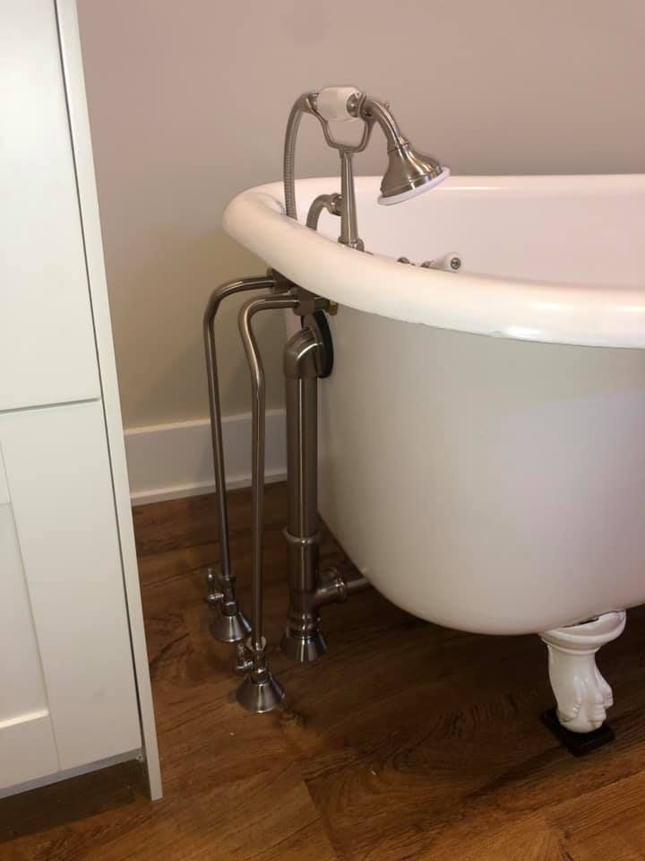
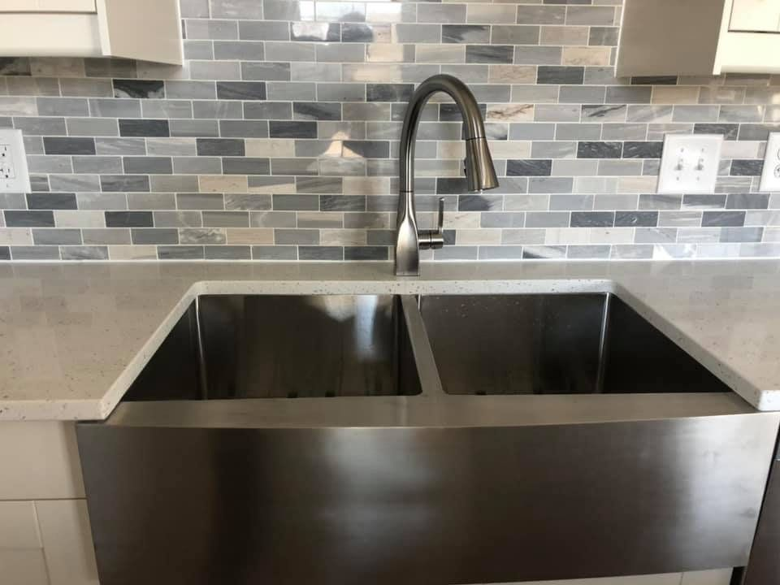
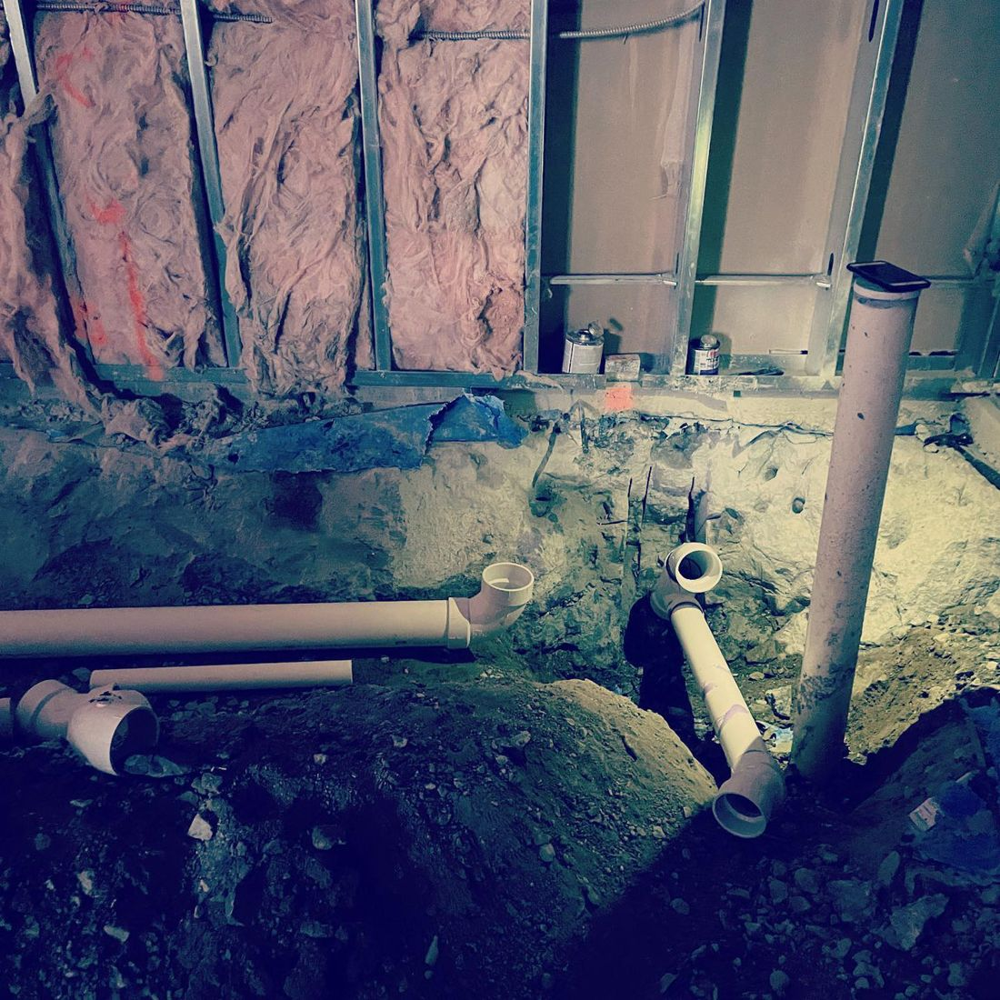
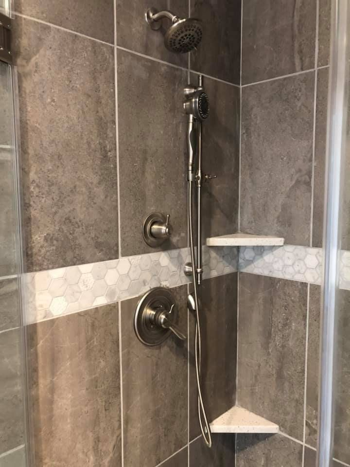
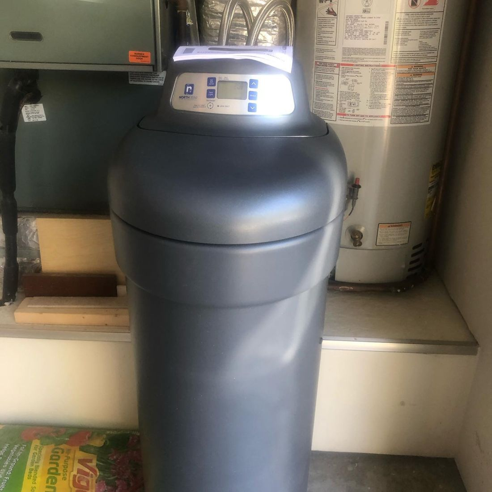
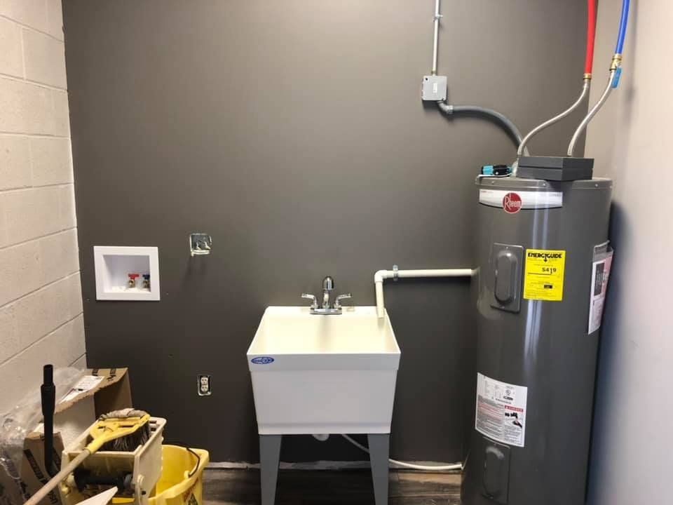

Plumber in Noblesville, Indiana · Since 2011
Licensed, insured and bonded plumbing for Noblesville, Carmel, Westfield, Fishers and Indianapolis. Free estimates, upfront pricing, and never a trip fee.
Bathrooms, kitchens, rough-ins and repairs, photographed on the job by 2B Plumbing.






Emergency or planned, you get your plumbing laid out in plain terms: what needs fixing now, what can wait, and what it will cost before any work starts.
Flooded basement, leaking water heater, a faucet erupting at the worst possible time. You get calm advice on the phone until we arrive, then a fast repair so you don't have to cancel your plans.
Servicing and replacement for gas, electric and tankless models. We won't recommend a new water heater unless your existing one is beyond repair.
Repair and installation, including battery backup and water backup sump pumps. Rule of thumb: replace yours every four to six years.
Showers, sinks, faucets, toilets and accessibility plumbing, plus new plumbing for your home, office or outdoor space.
When you call 2B Plumbing, the person you talk to is your plumber. Nothing gets lost in the pipeline.
You only pay for the fix after you approve transparent, fair pricing.
So you can decide how and when to spend your hard-earned money on what's broken.
Cash, credit or debit, personal or business checks, in any combination.
Customer words, as posted on the 2B Plumbing site.
“Finally! I found a plumber I trust who not only responded quickly to an emergency flood in my basement, but also installed a new garbage disposal, sink, and faucet during a routine appointment. 2B Plumbing is our go-to service, giving us one less thing to worry about as homeowners.”
“I had a plumbing emergency and Derick showed up promptly and fixed my problem. I have also used 2B Plumbing for other projects and was so pleased with their outstanding work and professionalism.”
“I called because my water heater was on the fritz and they came within 24 hours! They fixed my water heater and the price was unbelievable! I will be using them again.”
“He was prompt. Very professional and friendly. Did a great job and cleaned up when he was done! His prices are really reasonable. He will be our go to plumber from now on!”
“Derick helped me sort out what was needed to fix my kitchen faucet, offered guidance so I knew what to order and was very accommodating with my work schedule. All of that before he arrived to do the job!”
“Derick was very punctual and professional when he addressed and repaired my plumbing here at my office. He was affordable and honest.”
“Great work. Fixed my amateur plumbing job in about 45 minutes.”
Since 2011, 2B Plumbing has handled plumbing repair, maintenance and installation for homes and businesses throughout Central Indiana. It's a small, locally owned company, and most of the schedule comes from referrals.
You meet with Derick personally, you get a clear estimate with competitive pricing, and you're always talking to the person who will be working in your home.
Based in Noblesville and working throughout Indianapolis, Hamilton County and the surrounding counties.
Straightforward pricing, scheduling and solutions with a single call. Estimates are free and there's never a trip fee.